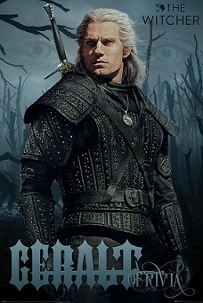
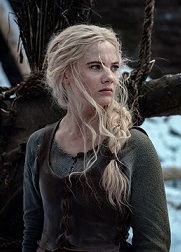
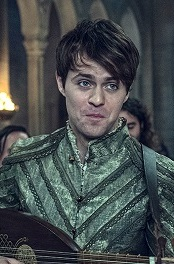
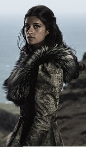
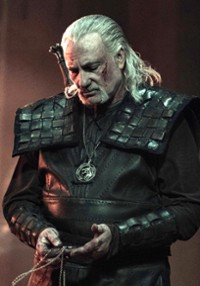
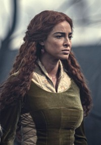

Geralt z Rivii
Przez driady i elfy nazywany Gwynbleidd (ze st. Biały Wilk), znany również jako Rzeźnik z Blaviken – syn czarodziejki Visenny i najprawdopodobniej wojownika Korina. Krótko po narodzinach został on oddany przez matkę do wiedźmińskiej Szkoły Wilka w twierdzy Kaer Morhen. W trakcie szkolenia na wiedźmina został poddany Próbie Traw, a następnie Zmianom, które przeszedł nadzwyczaj dobrze. Został z tego powodu wybrany razem z innymi młodzikami do dodatkowych eksperymentów, które przeżył jako jedyny. Wynikiem tych działań jest brak pigmentu w jego włosach oraz ich mlecznobiały kolor. W efekcie mutacji i treningów zyskał m.in. zwiększony refleks i prędkość, wolniejsze tętno oraz zdolność adaptacji źrenicy do aktualnego oświetlenia. Jego preceptorem, mistrzem i mentorem był Vesemir, nauczyciel szermierki i znawca potworów. |
 |
Ciri
|  | Cirilla Fiona Elen Riannon, zdrobniale Ciri, zwana też Zireael lub Jaskółką – księżniczka Cintry, nosicielka genu Starszej Krwi, wiedźminka i swego czasu bandytka. Jest dzieckiem-niespodzianką, obiecanym Geraltowi z Rivii przez jej ojca za odczarowanie go podczas uczty na dworze Calanthe. Urodziła się w 1251 r. w Cintrze, najprawdopodobniej podczas święta Belleteyn, jako córka Pavetty i Jeża z Erlenwaldu, który podawał się za syna króla Akerspaarka. Rodzice Ciri zgineli w katastrofie na morzu osierocając córkę, więc dalszym wychowaniem zajęła się Calanthe - jej babka. |
Jaskier
Julian Alfred Pankratz wicehrabia de Lettenhove, znany jako Jaskier – szlachcic, słynny poeta, trubadur, bard, szpieg oraz były wykładowca na Akademii Oxenfurckiej. Bywalec królewskich dworów, faworyt księżnej Toussaint Anny Henrietty. Autor dzieł takich, jak Ballada o Lwiątku z Cintry, Próżne zabiegi, czy Pół wieku poezji. Najbliższy przyjaciel legendarnego wiedźmina Geralta z Rivii. Jaskier zyskał sobie sławę jednego z największych kobieciarzy świata, angażując się zarówno w przelotne znajomości, jak i poważniejsze związki. |
 |
Yennefer z Vengerbergu
|  | Czarodziejka, członkini Rady i Loży, miłość życia Geralta z Rivii i przybrana matka Ciri. Urodzona w Belleteyn 1173 roku. Chociaż miała 94 lata w czasie rozgrywania się wydarzeń opisanych w Wieży Jaskółki, utrzymywała młody wygląd i urodę przy pomocy magii. Na szyi nosi obsydianową gwiazdę (jej osobisty amulet). Yennefer miała wybuchowy temperament oraz cięty język. Chociaż przez wielu uważana za nieprzewidywalną, zarozumiałą oraz wyrachowaną, dla bliskich jej osób potrafiła być ciepła i troskliwa. Ciri w wielu swoich proroczych wizjach widziała Yennefer pobitą i zakutą w kajdany, co również się stało kiedy została wciągnięta w ten sam wir co Duny i Pavetta przez Vilgefortza, który próbował czytać jej w myślach uszkadzając ją i zmuszając do wyjawienia miejsca ukrycia Ciri. |
Vesemir
Najstarszy znany wiedźmin cechu Wilka, prawdopodobnie starszy od Kaer Morhen. Jedyny żyjący z wiedźmińskiej starszyzny zajmującej się tworzeniem i szkoleniem młodych wiedźminów. Mistrz miecza, nauczyciel szermierki oraz znawca potworów, preceptor wiedźminów Geralta i Eskela. Przekazuje Ciri swoją wiedzę na temat najróżniejszych bestii i potworów. Dla Geralta przybrany ojciec i nauczyciel. Nosił siwą brodę. Miał słabość do Triss. Nie mógł oswoić się z tym, że czarodziejka nie jest już dzieckiem. Dla wielu młodych wiedźminów był on mentorem i ojcem, miał więc w zwyczaju traktować wielu swoich dawnych podopiecznych z łagodnością. Vesemir złagodniał z wiekiem i stał się bardziej wyrozumiały. Mimo tego wszyscy wiedźmini słuchali się jego rozkazów i poleceń, darząc go ogromnym szacunkiem. |
 |
Triss Merigold
|  | Temerska czarodziejka, była doradczyni króla Foltesta, członkini Rady Królewskiej Temerii, a po jej rozwiązaniu członkini Loży Czarodziejek. Uczestniczka Bitwy o Wzgórze Sodden. Od czasu Pogromu w Rivii nazywana Nieulękłą, natomiast po Polowaniach na Czarownice została doradczynią króla Tankreda z Koviru. Merigold była uzdolnioną czarodziejką, znającą tajemnice żywiołów, teleportacji i alchemii. Jak większość magiczek przeszła długoletnie szkolenie i naukę w Aretuzie. Jako pierwsza (i jedyna), wraz z Yennefer, rzuciła Niszczące Gradobicie Merigold, destrukcyjne zaklęcie o olbrzymiej sile rażenia, powstałe nieumyślnie na podstawie Piorunu Alzura. W Mariborze produkowała eliksiry i amulety. Nie mogła jednak używać eliksirów na sobie, ponieważ miała uczulenie na specyfiki z dodatkiem magii. Tolerowała jedynie amulety. |
Więcej możesz się dowiedzieć na stronie Wiedźmin Wiki.
{kind=link}
{kind=link}
{kind=link}
{kind=link}
{kind=link}
{kind=link}